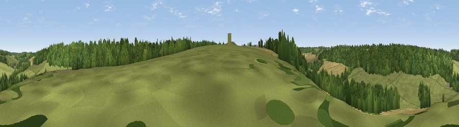

Viewpoint near Denton
#43090 in England · top 83% of its area beats it · near Denton · access?Where it is
The exact computed spot (TR 19775 47075). Click the marker for map links.
Public access: no public right of way or access land is recorded at this exact spot — it may be on private land. Computed from Natural England's CRoW access layer and OpenStreetMap rights of way — not the legal definitive map. Always verify locally.
The view, rendered

A 360° render of this exact spot computed from the terrain model, tree cover and land cover — summer colours, afternoon light, calibrated against photographs of famous viewpoints. Real trees, hedges and buildings will differ in detail.
The panorama
Grey silhouette: terrain skyline in each direction (720 bearings, Earth curvature and refraction included). Dashed green: skyline with trees (+15 m) and buildings (+8 m) as obstacles. Blue strip: how far the ground is visible on each bearing.
Where the view opens
Wedge length = distance to the farthest visible ground on that bearing (vegetation-aware). Rings at 10, 25 and 50 km.
What fills the view
41% woodland · 40% grassland · 19% cropland
Angular shares of the visible panorama (visual magnitude), not map area. Landscape diversity 0.46 (0–1 Shannon).
Key numbers
More beautiful places nearby
The staircase of upgrades: each row has a higher view potential than everything closer. Driving times are estimates from straight-line distance, calibrated against real road routing — check an actual route before setting out.
| Place | Direction | Drive | Score |
|---|---|---|---|
| Viewpoint near Elham | SW · 1 km | ~4 min | 28.0 |
| Viewpoint near Rhodes Minnis | SW · 6 km | ~13 min | 29.1 |
| Viewpoint near Etchinghill | SSW · 7 km | ~15 min | 48.8 |
| Viewpoint near Etchinghill | S · 9 km | ~18 min | 76.6 |
| Viewpoint near Old Hawkinge | SSE · 9 km | ~18 min | 76.9 |
| Tolsford Hill | SSW · 10 km | ~19 min | 77.9 |
| Viewpoint near Capel-le-Ferne | SSE · 10 km | ~20 min | 80.2 |
| Viewpoint near Willingdon | WSW · 76 km | ~100 min | 83.4 |
51.18064, 1.14314 · source: screening · position refined by local search. Computed location — check access rights before visiting.